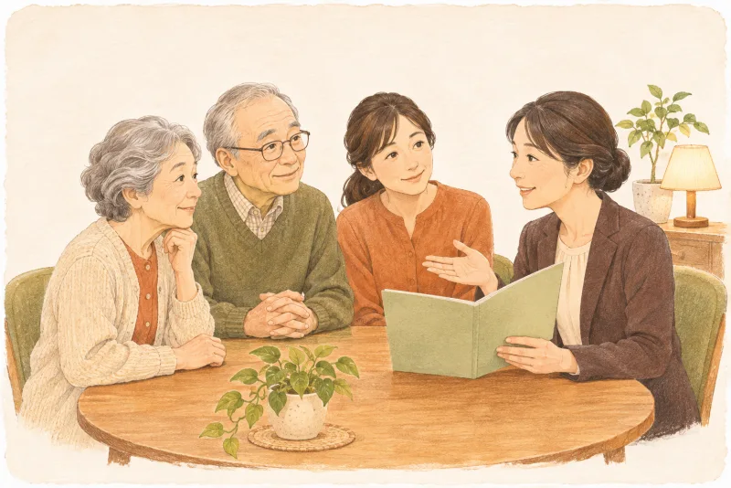
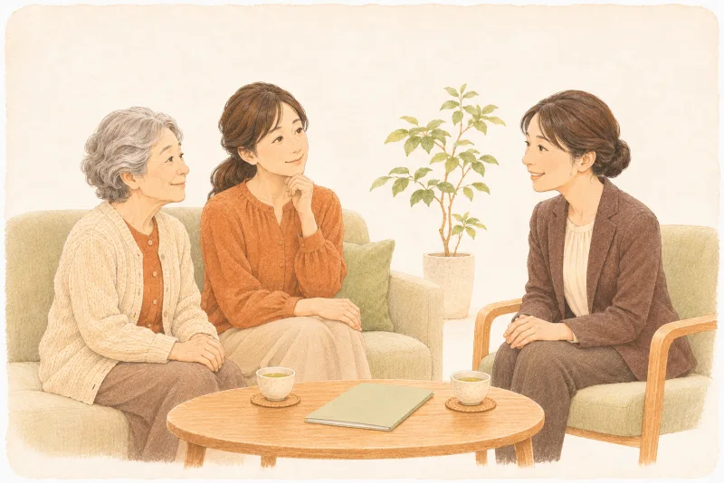

01
介護のご相談
介護を必要とされている方のご相談をお受けしています。
岡山市中区の介護相談窓口
ケアプラン福泊
介護を必要とされている方の相談窓口。最適なケアプランを組み立て、ご提案いたします。
TEL. 086-201-4133

私たちにできること
ケアプラン福泊は、介護を必要とされている方の相談窓口です。
介護を必要とされている方のご相談をお受けしています。
最適なケアプランを組み立て、ご提案いたします。
ケアプランのご提案に加え、申請代行を行っております。

施設・アクセス
岡山市中区福泊のWARAKU福泊です。
株式会社 和楽
営業日・営業時間はWARAKU福泊の施設共通案内です。ケアプランの対応日時はお問い合わせください。
ケアプラン福泊へのお問い合わせ
メールのリンクを押すと、お使いのメールアプリが開きます。